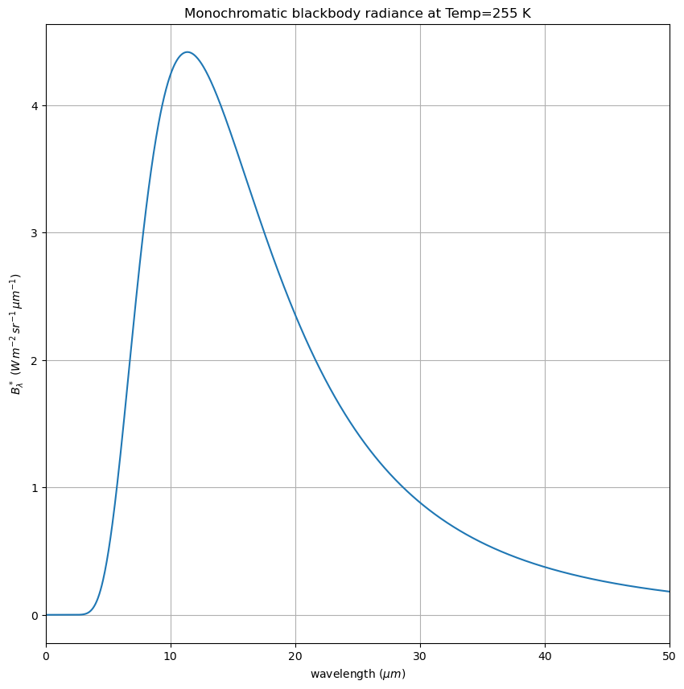

Plotting the Planck function with python#
Download planck_function.ipynb from the week1 folder
import numpy as np
from matplotlib import pyplot as plt
Write a function compute Stull 2.13#
import numpy as np
#
# get Stull's c_1 and c_2 from fundamental constants
#
# c=2.99792458e+08 #m/s -- speed of light in vacuum
# h=6.62606876e-34 #J s -- Planck's constant
# k=1.3806503e-23 # J/K -- Boltzman's constant
c, h, k = 299_792_458.0, 6.626_070_04e-34, 1.380_648_52e-23
c1 = 2.0 * h * c ** 2.0
c2 = h * c / k
sigma = 2.0 * np.pi ** 5.0 * k ** 4.0 / (15 * h ** 3.0 * c ** 2.0)
print(f"in planck notebook, here is sigma {sigma}")
def Flambda(wavel, Temp):
"""
Calculate the blackbody radiant exitence (Stull 2.13)
Parameters
----------
wavel: float or array
wavelength (meters)
Temp: float
temperature (K)
Returns
-------
Elambda: float or arr
monochromatic radiant exitence (W/m^2/m)
"""
Flambda_val = c1 * np.pi / (wavel ** 5.0 * (np.exp(c2 / (wavel * Temp)) - 1))
return Flambda_val
in planck notebook, here is sigma 5.670366816083269e-08
use the function#
npoints = 10000
Temp = 255 # K
wavelengths = np.linspace(0.1, 500.0, npoints) * 1.0e-6 # meters
Fstar = Flambda(wavelengths, Temp)
fig, ax = plt.subplots(1, 1, figsize=(10, 10))
ax.plot(wavelengths * 1.0e6, Fstar * 1.0e-6)
ax.set(xlim=[0, 50])
ax.grid(True)
ax.set(
xlabel="wavelength (m)",
ylabel=r"$F_\lambda^*\ (W\,m^{-2}\,\mu m^{-1}$)",
title=f"Monochromatic blackbody flux at Temp={Temp} K",
);
Convert flux to radiance#
This uses the reading Finding the flux given the radiance
Blambda = Fstar / np.pi
fig, ax = plt.subplots(1, 1, figsize=(10, 10))
#
# convert from meters to microns and per meters to per microns
#
ax.plot(wavelengths * 1.0e6, Blambda * 1.0e-6)
ax.set(xlim=[0, 50])
ax.grid(True)
ax.set(
xlabel=r"wavelength ($\mu m$)",
ylabel=r"$B_\lambda^*\ (W\,m^{-2}\,sr^{-1}\,\mu m^{-1}$)",
title=f"Monochromatic blackbody radiance at Temp={Temp} K",
);
